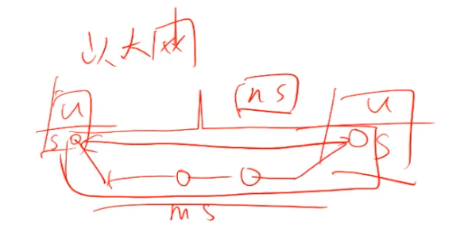

目标
- 确保兼容单机数据库 （像单机事务一样来操作分布式事务）
- 尽最大努力保证扩展性
- 尽最大努力保证高可用和数据安全
Share Disk方案 - 单机事务
采用远程内存直接访问RDMA ( FC/Infiniband )
RDMA技术全称远程直接数据存取，就是为了解决网络传输中服务器端数据处理的延迟而产生的。RDMA通过网络把资料直接传入计算机的存储区，将数据从一个系统快速移动到远程系统存储器中，而不对操作系统造成任何影响，这样就不需要用到多少计算机的处理功能。它消除了外部存储器复制和文本交换操作，因而能解放内存带宽和CPU周期用于改进应用系统性能。
锁延迟的主要原因在于以太网：TCP封包解包，多次路由，系统态与用户态的切换，最终导致网络延迟会很高；
FC/Infiniband的核心是：重新写了一套协议，采用更高效的组网方式，远程系统调用的时间可以非常短；

应用：Oracle RAC
问题：系统成本较高，方案比较复杂；
放弃分布式事务

事务的日志存放：使用RAID方案存储日志
应用：Oracle RAC Amazon Aurora
优势：
（1）兼容性好，SQL全兼容
（2）能提升读性能
劣势：
（1）写性能巨大下降
数据写入cache，同步等待其他机器的内存cache清空，然后刷入磁盘；
（2）高可用切换时间长
数据同步的迁移会很长时间：share disk本质是一个同机房方案，因为跨机房写入延迟很高；
（3）扩展性有限，实测4台基本是极限
上层计算机器，新机器进来数据同步开销越来越高；下层disk也有限，因为它假定业务需求没这么高；
（4）传递距离有限制
Share Nothing方案 - 分布式事务
(1) 标准2PC方案
读写＋写读无法并行，系统的并发度没有MVCC高；
(2) MVCC+2PC方案
逻辑时间 Postgres XC、Postgres XL
单点时间戳分配器
物理时间 Google spanner
物理时间的好处在于统一时间（对表）之后，一段时间内系统不需要同步就可以标记事务的读写顺序；
物理时间的问题在于不准确，如何保证多台机器的绝对时间误差足够小就成为关键；